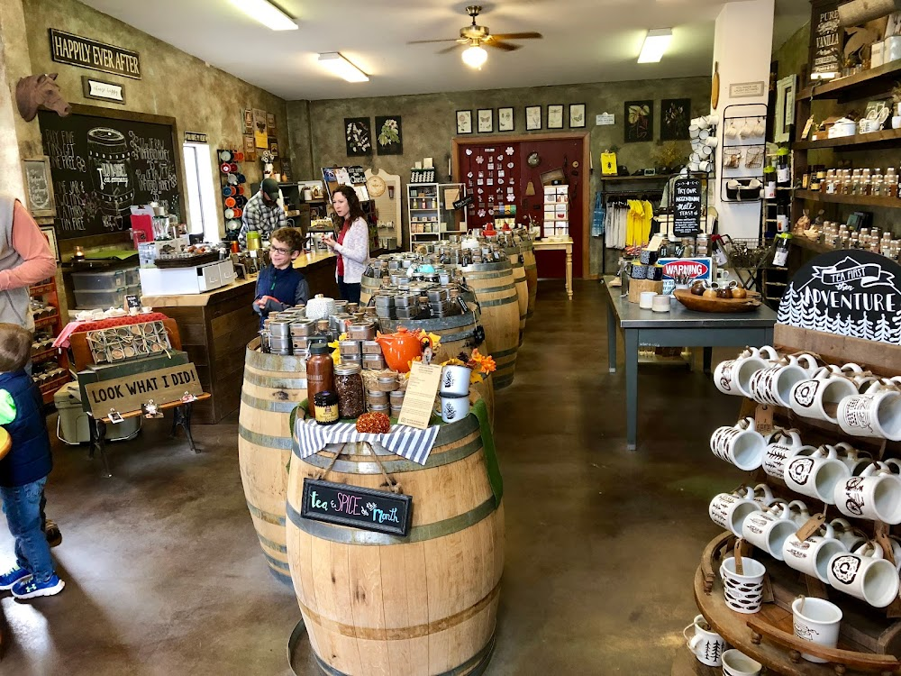

The Story
Why It Stands Out

New Mexico Roots
Founded in 2015 in Ruidoso, Old Barrel Tea Company has grown from a single location into a multi-state brand with stores across New Mexico, Colorado, and Arizona. The Cloudcroft shop is part of that broader story.
Female-Run & Family-Owned
The company consistently frames itself around family ownership and female leadership. Chamber and tourism sources confirm this identity — it is not just marketing language.
Community Presence
During the 2024 Ruidoso fire emergency, the Cloudcroft location accepted donations for affected residents — a sign that the shop plays a visible community role beyond retail alone.